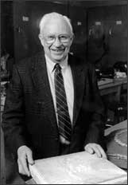

John H. Ostrom
1928–
John Ostrom was born and raised in New York City. He studied paleontology at Union College in Schenectady in upstate New York and then completed his doctoral studies at Columbia University in 1960. The following year, he began teaching at Yale University.
In 1964, on a Yale expedition in southern Montana, Ostrom discovered the fossil of a previously unknown theropod dinosaur, which he later named Deinonychus. To Ostrom, the Deinonychus skeleton seemed remarkably birdlike. Ostrom traveled to Germany to take a first-hand look at the famous fossil of Archaeopteryx so that he could compare it to his new find. To his great excitement, he discovered that the backbones, fused clavicle, swiveling wrists, toes, and pelvic bones of the two fossils were amazingly similar. Both creatures would have walked on their hind legs. Except for the absence of feathers, Deinonychus seemed to have been built much like an ancient bird.
Deinonychus could have even been warm-blooded. He theorized that dinosaurs might first have developed feathers not for flight, but for warmth. In 1973 he published a paper in which he resurrected the theory that birds had evolved from theropods—an idea that had been popular in the late nineteenth century, but that had been discounted for decades. At first, Ostrom's ideas were met with scorn, but eventually, as more and more fossil discoveries provided evidence to support his theory, the majority of scientists came to accept his view.
Over the years, Ostrom conducted numerous fossil-finding expeditions in the United States, South America, and China. He named three dinosaurs in 1970: Microvenator, Sauropelta, and Tenontosaurus. He continued to teach at Yale and became curator of Yale's Peabody Museum of Natural History; he also published numerous articles and books, lectured around the world, and served as editor of the American Journal of Science. He is now retired.